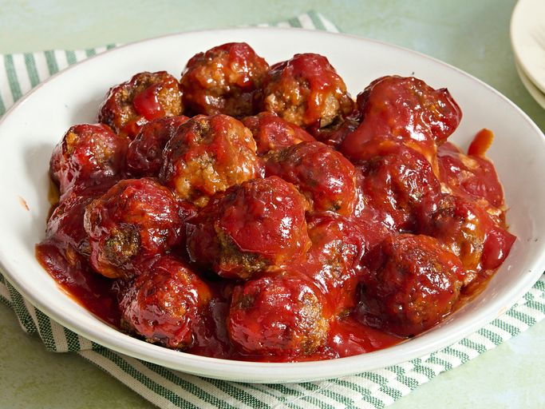

Cape Cod Cocktail Meatballs
Home

Description
These impressive Cape Cod cocktail meatballs are perfect for Christmas, New Year's, or any celebration. This is
my version, but the recipe originated in Cape Cod (cranberry country).
Ingredients
- 2 pounds ground beef
- 1 cup bread crumbs
- 2 large eggs
- ¼ cup chopped fresh parsley
- 2 tablespoons grated onion
- 2 tablespoons soy sauce
- ¼ teaspoon garlic powder
- 1 (16 ounce) can jellied cranberry sauce (such as Ocean Spray)
- 1 ½ cups ketchup
- 2 ½ tablespoons packed brown sugar
- 1 tablespoon fresh lemon juice
Steps
- Gather all ingredients. Preheat the oven to 375 degrees F (190 degrees C).
- Combine ground beef, bread crumbs, eggs, parsley, onion, soy sauce, and garlic powder in a bowl until
thoroughly mixed.
- Roll meat mixture into meatballs using about 2 teaspoons meat mixture per meatball; arrange meatballs in a
large, deep baking dish.
- Bake in the preheated oven until meatballs are browned, about 25 minutes. Drain excess grease.
- Combine cranberry sauce, ketchup, brown sugar, and lemon juice in a saucepan over medium heat; cook and stir
until cranberry sauce melts and sugar dissolves. Pour sauce over meatballs.
- Continue baking in the oven until sauce forms a glaze and meatballs are no longer pink inside, 25 to 30
minutes more.
- Serve and enjoy!